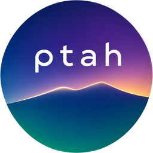

SEMANTIC CAD / BUILDING DEVELOPMENT ENVIRONMENT

Ptah
建築をビルドする。
そのビルド結果を、人間が確かめられる。
Ptah（ピタ）は、日本の木造住宅から始める、建築の開発環境です。人が画面で設計しても、将来AIに依頼しても、同じ建築モデルとルールを扱うことを目指しています。
開発中 / 一般公開前設計して、ビルドして、確かめる
間取りを考える。柱や梁を決める。建具や納まりを調整する。建築モデルから、図面や仕様を取り出す。
変更したら、関係する部分を再計算する。問題や未確定事項があれば、その理由をたどる。
建築そのものを編集し、結果を確認する。Ptahが目指す仕事の流れです。
人もAIも、同じ建築を扱う
画面、チャット、外部ツール。入口が違っても、建築の意味と判断の根拠は同じところに残す。
人が操作
AIに依頼
Ptah Engine
建築モデル × Rule
建築モデル × Rule
図面・3D
数量・見積
検証・根拠
設計 → Build → Test → 確認
この図は目標とする処理の概念図です。AI操作、数量・見積、総合的な検証は一般提供されていません。
開発状況
現在、木造住宅の実例を使い、建築モデル、部材と納まりのルール、2D・3Dの表現、図面の生成を実装・検証しています。
- 内部検証建築モデル、Rule、図面表現など
- 開発目標数量・見積、各種検証、AIからの操作
- 未公開一般向けアプリ、公開API、MCP、プラグイン
一般向けのダウンロードはまだありません。開発中のため、実務利用への適合性や安全性は保証していません。
自分の仕事に合わせて育てる
PtahはRustで開発しています。建築知識をRuleとして記述し、将来はWASMプラグインなどで機能を追加・共有できる環境を目指しています。
プラグインの一般提供は準備中です。ソースコードの公開範囲とライセンスは検討中で、現時点でOSSとして公開しているわけではありません。